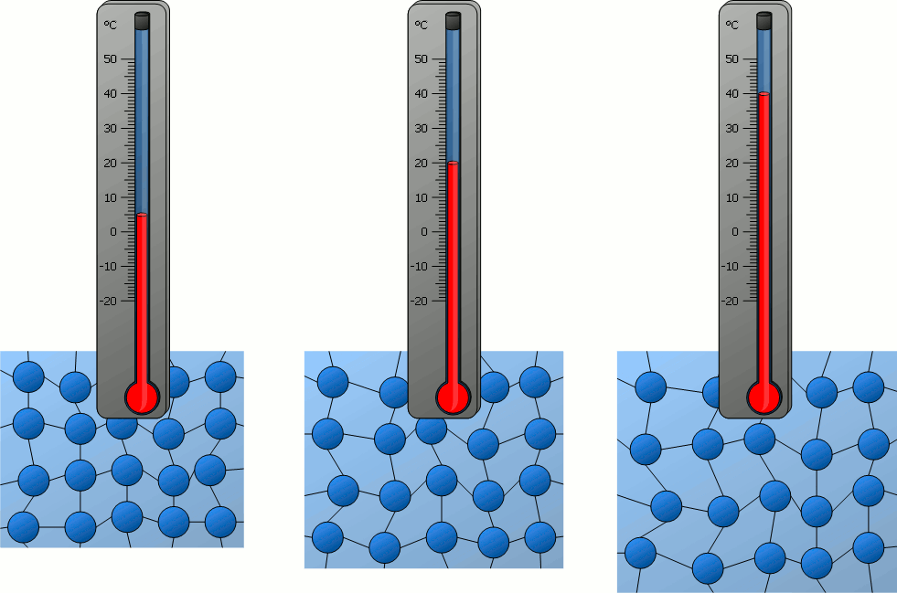
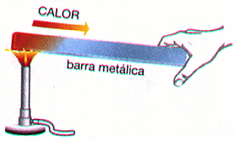
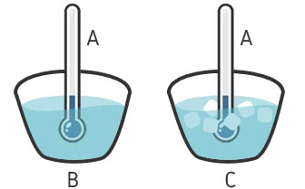
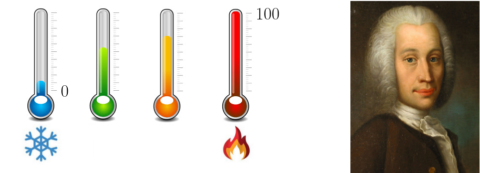
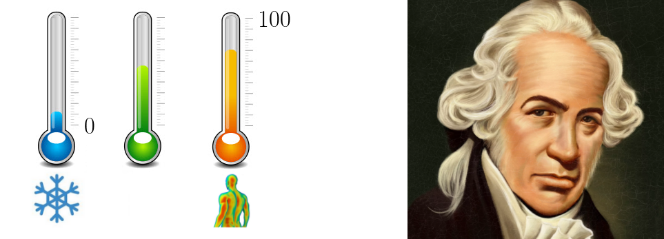
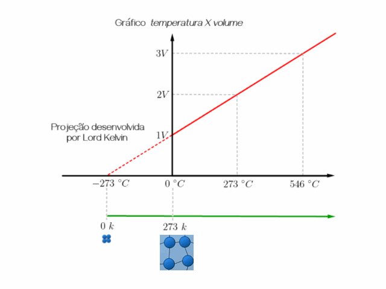
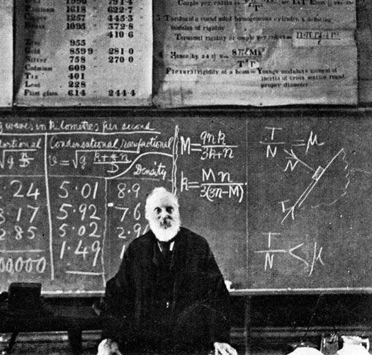
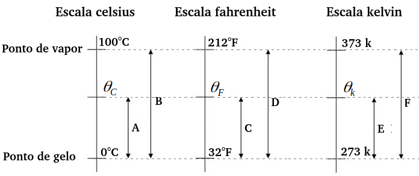

Aula6-38: Introdução à termologia e escalas termométricas
Temperatura
Temperatura é a grandeza física que mede o grau de agitação das partículas (átomos e moléculas) de um corpo. Dizemos que um corpo está a uma temperatura mais elevada que outro quando suas partículas estão mais agitadas do que as do outro.

Imagem extraída, com permissão concedida, do site www.tec-science.com
Imagem extraída, com a devida permissão, do site www.tec-science.com
Calor
|
Calor é energia térmica em trânsito que flui espontaneamente de um corpo de maior temperatura a outro de menor temperatura. |
 |
Equilíbrio térmico
Se permitirmos que duas substâncias, a temperaturas diferentes, troquem calor entre si por tempo suficiente, elas atingirão um estado térmico chamado equilíbrio termodinâmico. Esse equilíbrio é caracterizado pela ausência de troca de calor entre os corpos e, consequentemente, pela igualdade de temperatura entre as substâncias.
⚛ OUTRO MODO DE SE DEFINIR TEMPERATURA
Agora que sabemos o que é equilíbrio termodinâmico, podemos propor uma nova definição, mais fundamental, para o conceito de temperatura: temperatura é a propriedade que corpos em equilíbrio termodinâmico têm em comum.
|
⚛ LEI ZERO DA TERMODINÂMICA |
 |
Escalas termométricas
-
Escala centígrada (grau Celsius – °C): No século XVIII, o astrônomo sueco Anders Celsius (★ 1701 — 1744 ✝) deixou que um tubo preenchido de mercúrio trocasse calor com uma mistura de água e gelo. O mercúrio inicialmente se comprimiu e, em seguida, atingiu o equilíbrio térmico, marcando certa altura no recipiente, anotada como 0. Depois disso, Celsius deixou o tubo entrar em equilíbrio térmico com água em ebulição; o mercúrio então se dilatou e atingiu uma nova marca, à qual se atribuiu o número 100. O astrônomo dividiu então em 100 partes iguais o intervalo entre as duas marcas, conferindo a cada parte o valor de um grau Celsius. Nascia assim o grau Celsius.

-
Escala Fahrenheit (grau Fahrenheit – °F): É uma escala desenvolvida pelo físico alemão Daniel Gabriel Fahrenheit (★ 1686 — 1736 ✝). Atualmente, é amplamente usada em países de forte tradição anglo-saxônica, como os Estados Unidos e a Inglaterra. Para construir sua escala, Fahrenheit definiu como 0 °F o ponto de fusão de uma mistura de água, sal e amônia e como 100 °F o ponto em que o termômetro entra em equilíbrio térmico com o corpo humano em estado natural.

-
Escala Kelvin (reconhecida pelo SI [kelvin – K]): William Thomson, também conhecido como Lord Kelvin, estudando os gases a partir da escala centígrada (Celsius), percebeu que, elevando a temperatura de um gás em 273 °C, seu volume inicial dobrava, e que, aquecendo-o mais 273 °C (chegando a 546 °C), o volume inicial triplicava (veja o gráfico abaixo). Kelvin concluiu então que o volume dos gases variava linearmente com a temperatura e que, se resfriássemos o gás o suficiente, deveria existir uma temperatura limite que o corpo não poderia atingir (pois isso representaria a ausência total de volume — o que é impossível). A seguir, o cientista calculou essa temperatura limite e a definiu em sua escala como a temperatura zero (também conhecida como zero absoluto). A escala Kelvin é, portanto, uma escala cujo zero se situa na menor temperatura concebível na natureza e que avança em intervalos iguais aos da escala centígrada.
|
 |
 |
⚛ CONVERSÕES DE CELSIUS E FAHRENHEIT PARA KELVIN
Para obtermos expressões de conversão entre as escalas termométricas, podemos usar as seguintes relações:

De Celsius para kelvin:
De Fahrenheit para kelvin: